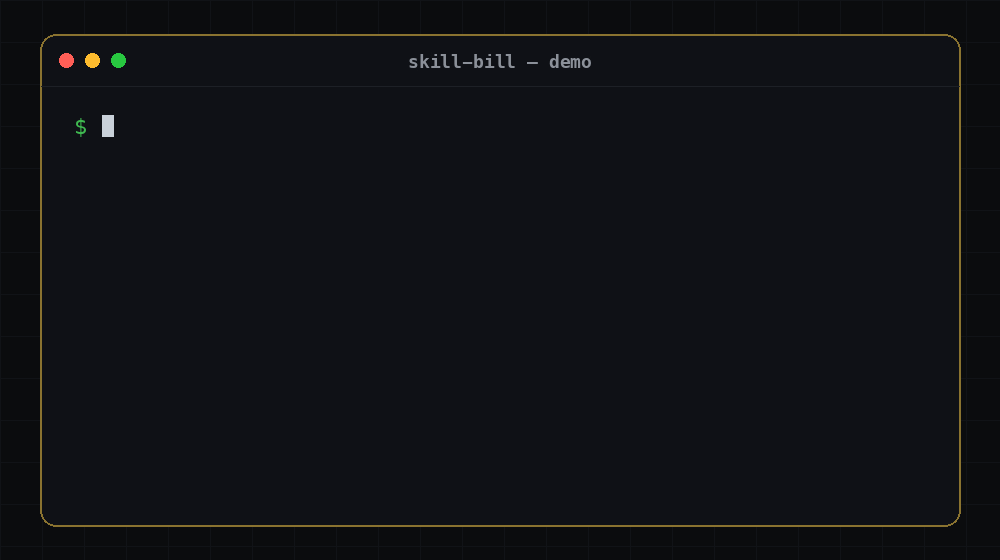
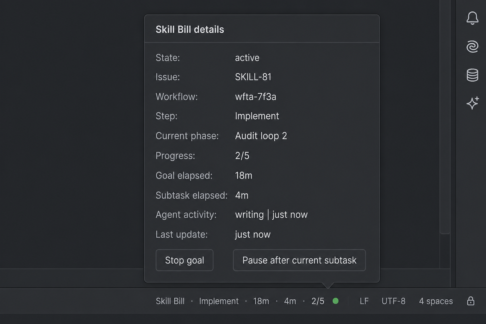

Skill Bill
Spec in.
Merge-ready PR out.
Planned, implemented, stack-specialist-reviewed, audited against the spec, and quality-gated — the same way, every run.
Agents are strong. Process is what they lack.
The same prompt yields different work every run. Sometimes it reviews thoroughly, sometimes it skims. Sometimes it follows your conventions, sometimes it invents new ones. Skill Bill gives yours the structure of a real engineering process and holds it to that process across whichever agents you use.
One governed path from spec to PR
`/bill-feature` carries the work through every phase. If a run is interrupted mid-flight, it resumes from durable workflow state — nothing lost.
- 01 Plan
- 02 Implement
- 03 Review
- 04 Audit
- 05 Quality gate
- 06 Merge-ready PR
Interrupted mid-flight. Still finishes.
A `/bill-feature` run that hits a usage limit, crash, or lost connection, then resumes from durable state and completes. Generated demo, not a hand recording — so it stays current with the product.

What holds it together
-
Works with every supported agent
One install detects and wires Claude Code, Codex, Cursor, and Junie. Pick the agents you use; Skill Bill lands in each of them the same way.
-
CLI and MCP included
The installer places the
skill-billCLI andskill-bill-mcpserver, then registers them so your agents can drive the same governed feature runs. -
Durable, resumable state
Long multi-phase runs survive crashes and context compaction. Resume is agent-independent: pause under Claude Code, continue under Codex.
-
Stack-specialist packs
Go, iOS, Kotlin/KMP, PHP, Python, Rust, and TypeScript packs review and check code the way someone who knows that stack would.
Status in IntelliJ IDEA
An isolated IntelliJ plugin puts the live feature run on the status bar: current step, progress, elapsed clocks, and agent activity. Click for details. Stop the goal or pause after the current subtask without leaving the IDE.

plugin-v* GitHub Release zip via Settings → Plugins →
Install Plugin from Disk. Requires IntelliJ IDEA 2025.2+ and a
skill-bill CLI the IDE can resolve.
Install in about a minute
Downloads and checksum-verifies the prebuilt runtime for your OS. No clone, no JDK, no Gradle. Needs `curl`, `tar`, `unzip`, and `shasum`/`sha256sum` on macos-arm64, macos-x64, windows-x64, or linux-x64.
curl -fsSL https://raw.githubusercontent.com/oila-gmbh/skill-bill/main/install.sh | bashPrefer to read the script first? Open install.sh, then run it locally.
skill-bill version
skill-bill doctor
skill-bill update-checkWho this is for
Developers and teams who want an AI agent to implement whole features with the rigor of a real engineering process — planned, reviewed, audited, and quality-gated — instead of one-off code they have to babysit. You still review the final PR; what reaches you was already checked. Overkill if you only want quick single-file completions. Pre-1.0, built and maintained by a small team. Skill Bill ships its own features through this pipeline.